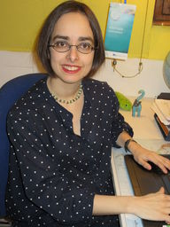

People of openSUSE: Sarah Julia Kriesch

Please introduce yourself!
My name is Sarah Julia Kriesch. I’m 30 years old and I am a work experienced student at the TH Nürnberg. I am educated as a Computer Science Expert for System Integration, worked as a Linux System Administrator and Linux Systems Engineer/ ITO Coordinator, and work as a Working Student at ownCloud. I am a founder of the AG Open Source at our university and a founder of the Heroes team at openSUSE. Last year I joined the Release Management team, too. This year I was elected as an openSUSE Board Member.
How do people usually call you? What nickname do you use on IRC. Do you have a blog or any other web site you would like to share?
All people in the community are saying Sarah. My nickname is AdaLovelace, because I needed an anonymous name after my education. My educator didn’t want to watch me as a member of openSUSE and my friends said that would be a great role model for me. You can find my blog under https://sarah-julia-kriesch.eu.
What are you doing for a living? Are you paid to work on openSUSE?
I am living the student freedom at the moment. I won’t be paid for the work at openSUSE. I get the scholarship Aufstiegsstipendium by the BMBF. Additional to that I receive some money as a Working Student from ownCloud. It is fantastic to work for open source projects. I transfer that with the AG Open Source to our university, too.
When and why did you start using openSUSE?
I started with openSUSE in my 2nd year of education as a Computer Science Expert. We used openSUSE as an a minimal system at our vocational school and I used SLES 10 in my education company. I wanted to organize a class trip to SUSE because we had many Linux enthusiasts in our class and I wanted to become a Linux System Administrator. I was invited to the openSUSE Conference 11 then. I met the community which changed my life. After that I was a private openSUSE user, too.
What was your first contribution to openSUSE?
My first contribution at openSUSE was volunteering at conferences (registration desk, video team, speaking). That’s a fantastic event every year. After that I began with German translations and contributed more and more to the German wiki.
In what way do you participate in openSUSE today and what keeps you going?
I am an Advocate and represent openSUSE on most German open source events. Last year I founded the Heroes team with my friends. I am a wiki admin there. I am a member of the Release Management team of Leap, coordinate a little bit the Translation team in the last months before the release day and contribute there, too. I test releases and create bugs, if I can find them. Since this year I am openSUSE Board member.
What have you learned in your time as part of the openSUSE community you would have wished to know when you started?
You live freedom in the community and can bring the openSUSE project forward if you like. The education degree isn’t important. You need only the motivation. You can meet people from different countries with different work/ education background.
When people ask you why they should use openSUSE instead of another distribution, what do you tell them?
openSUSE is easy to use and excellent for beginners. We offer many different desktops unlike any other Linux distribution. Leap is a stable system for servers and you can receive latest packages with Tumbleweed. A great thing for Ubuntu/ Debian users is the integrated apt-get command which converts apt-get commands to zypper commands. So it is easy to change/ to try openSUSE.
What are your favorite applications? What sets them apart?
My standard applications are Firefox, Konversation, GNOME Terminal and Evolution. That’s all you need for daily tasks and for communication.
Three words to describe openSUSE? Or make up a proper slogan!
best Linux distribution forever
What do you think the future holds for openSUSE?
It depends on the activity in the community and what other Linux communities are doing. Our tools like openQA and snapper will be used/ offered by other distributions, too. We go to other conferences and get visitors from other distributions. So we are open, which is great! We are looking towards more stability in Leap with the new release system. I believe we can get more users and contributors on this way. We should hold our position to be one of the best Linux distributions.
If you would have unlimited resources, what would you do with it?
I would split unlimited resources into different parts. I would use one part for studying and making our university into an open source campus. Another part would be for doing more operative tasks in the Heroes team and one part would be for pushing the openSUSE project forward.
Which is your favorite movie scene?
I like the scene in “Marie Curie” as Marie Curie insists on getting the 2nd Nobel prize because of the notification even though other people were opposed to it.
Star Trek or Star Wars?
Star Wars (but it is unimportant)
Torvalds or Stallman?
I enjoy the freedom in a Linux community. So it is a mixture of both…
Tumbleweed or Leap?
Leap. I am a member of the Release Management team for it. But Tumbleweed has got his own great features as a rolling release.
Show us a picture of something, you have always wanted to share!
All my shared pictures are on facebook and on my blog.
What would you like every person in the openSUSE community to know?
openSUSE is a community where you can grow. Everybody is unique and has got his talents. You can bring the openSUSE project with your ideas forward.